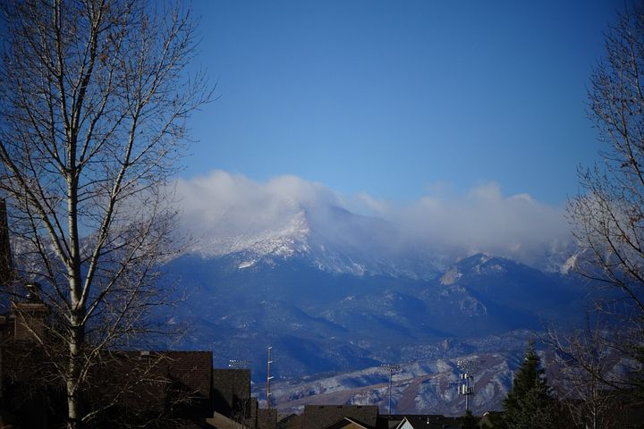
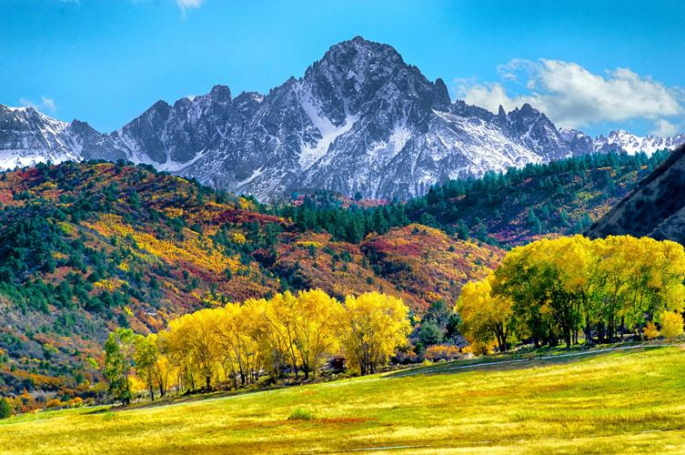
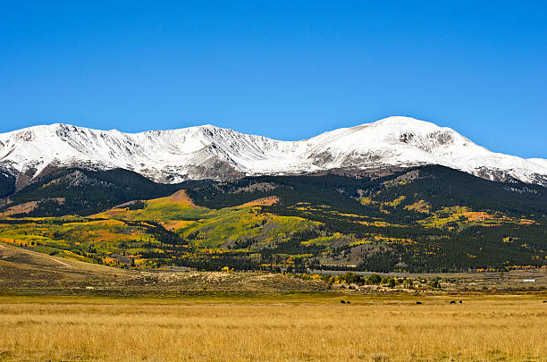

Colorado is a beautiful place full of stunning views, beautiful streams, and new adventures. I have loved hiking in the Rocky Mountains and want to display some of the best hikes in Colorado. Whether you are looking to use this site for an in-state day trip or a trip for afar, welcome to Colorful Colorado
American the Beautiful, one of our nations most well known songs was written at the top of this beautiful mountain. Located in southern Colorado, Pikes Peak is one of the only mountains in Colorado that you can drive to, and it even has a small cafe at the top! This hike provides extremely beautiful views through desnse forrest and has an unforgettable view at the top!
Located in the Uncompharge National Forrest near Telluride, Mount Sneffels hike is just as iconic as its name. Standing at 14,158 feet tall, 15 miles of rugged trail surround the area. Along Mount Sneffels are the Blue Lakes, who's dreamy clear water add enchantment to this hike. This is a great hike for more experienced climbers, who want to get outside and have a new adventure
One of the most iconic scenes of Colorado is Maroon Bells. Often found in photos all over calenders and wallpapers, Marroon Bells is a great place for any level of hiker. It is easily accesable, with a drive-in location, however there are other hike options available up to 25 miles long.
Standing at 14,439 feet in elevation, Mount Elbert is Colorados highest mountain. As the second highest peak in all of the lower 48 states, many people will feel the altitude sickness while climbing. However, do not be afraid of this monster mountain. The hikes is 9 miles long round-trip, a surprising small distance for such a high mountain.
If you want to learn more about my experiences traveling and more about me, please visit my professional business page